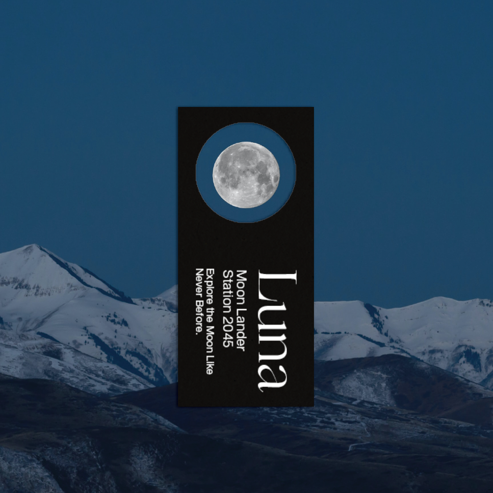
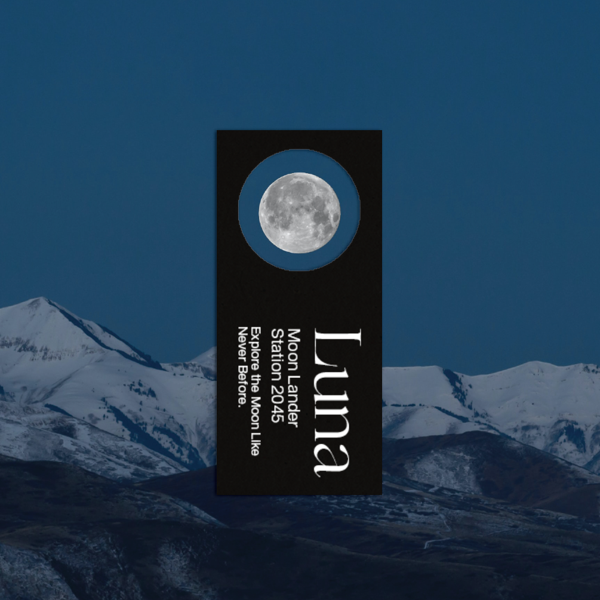
Set in a time where commercial travel between the Earth and the Moon is possible, visitors are invited to explore its surface within the bounds of the Moon Lander Station.
‘Map of the Moon’ is an educational poster and brochure offering users a means of guidance whilst interacting with Luna.
View the Digital Outcome here
View Website Prototype (Figma) here
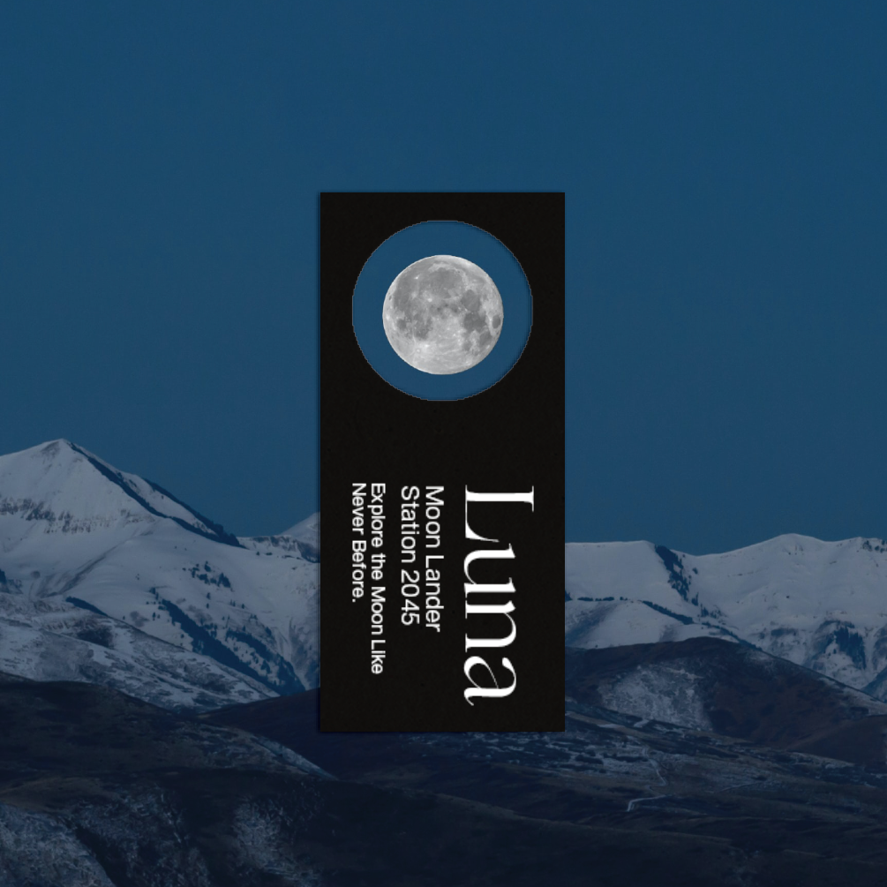
As this project begs an educational and informative need, a typographic approach was adapted using letter forms as a means to create shapes and design inspired by the work of Joseph Lebus. As such, final outcomes are both powerful in their appearance and content.
The audience was quite widely defined but emphasised the need to engage with both boys and girls aged between 16-25 who are predominantly students. To address this, the design style is neutral in its tone and is applied across a number of digital spaces. Most notably, the motion graphic is used across social media platforms such as Instagram.
The Brochure-Poster is a massed produced printed outcome that works in conjunction with the website offering a more interactive means of exploring the moon whether it be on Earth or whilst on the moon itself in a manner similar to Google Maps.
Outcomes: Poster, Brochure, Ticket, Motion, Website
Year: 2020
Tutor: Warren Taylor
MoD (Museum of the Disciple) explores and dives deep into a number of incredibly rare and unique religions from around the globe. Staged at the NGV, this campaign aims to draw people from across Australia to visit an exhibition like none-other.
This project draws upon an editorial style of design, utilising a singular piece of artwork - a collage created from a number of different religious leaders.
The audience was predominantly students and other young adults, targeted with contemporary design and powerful imagery that connects with the user via eye contact.
Outcomes include a number of stationery items such as a letter, envelope and business card, a book outlining the religions featured within the exhibition and tote bag for souvenir purposes. Large banner style posters are positioned outside the NGV and around Melbourne drawing connections across the campaign through the use of imagery.
Outcomes: Stationery, Book Cover, Tote Bag and Posters
Year: 2019
Tutor: Janet Mills
Nuclear Disarmament concerns the masses of nuclear warheads stockpiled for deployment in 2020. Nuclear War is a pressing and absolutely catastrophic event.
‘Ban the Bomb’ is a revitalised campaign from the 1960s utlilising a modern and brutalist approach to driving awareness to the global issue.
 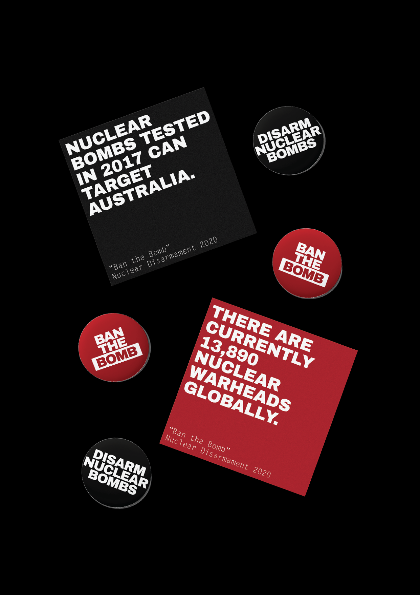
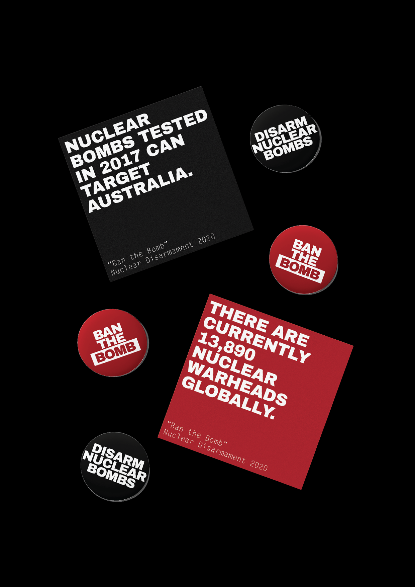
 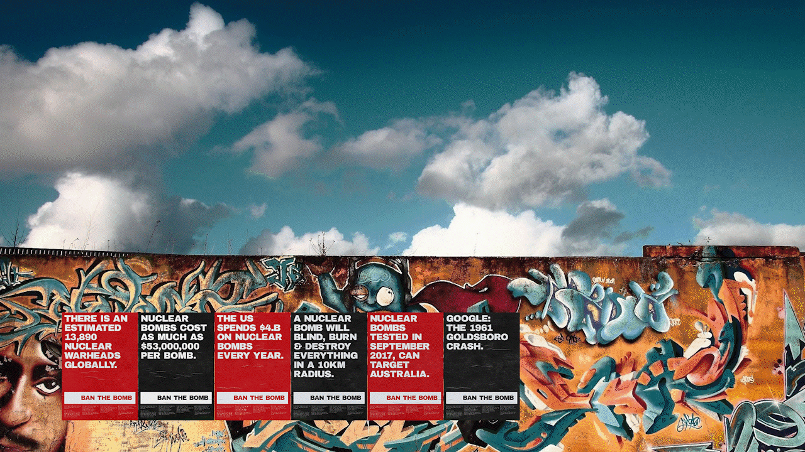
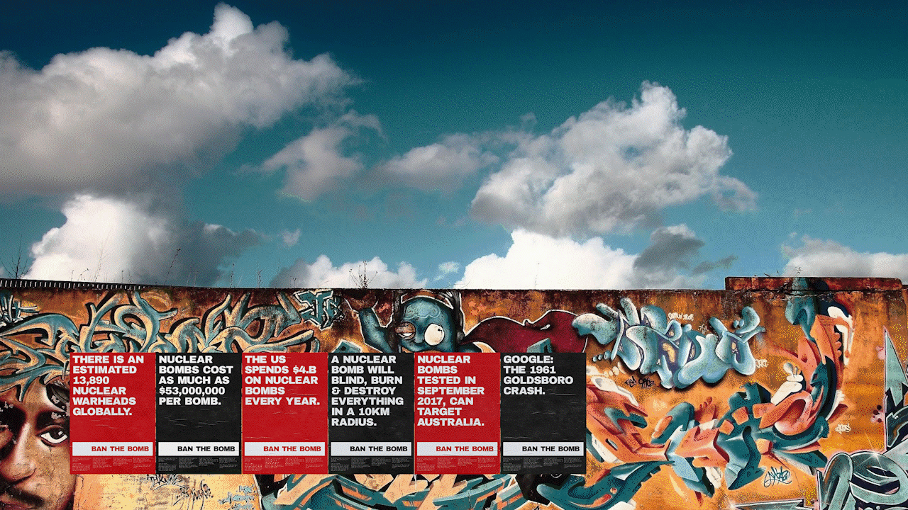
Contrary to the original campaign which presented itself in a more light-heart and friendly manner, 'Ban the Bomb' adapts a bold, confronting design style to evoke fear from the audience to ultimately drive awareness to the issue.
Inspired by the bleak and arguably traumatic nature of Victorian Government 'Drink Driving' campaigns, the typography is solemn and the messages are alarming. Specifically, the alarming content selected regarding masses of nuclear warheads stockpiled today and references to their incredibly catastrophic power and presence (Mention of the Goldboro Crash). Other inspirations include the stark and confronting nature of the Doomsday Clock, a reminder of Nuclear War in 2020.
The audience was naturally quite widely defined due to the nature of socio-global issues, however this campaign targeted an audience of young adults who will most likely care for the longevity of the planet and who are most likely aware of the destruction nuclear weapons cause.
Engagement with the community is mostly done through the use of posters and brochures, easily accessible and designed to present a clear message relying on high exposures in public. These posters are hypothetically posted onto historical landmarks and areas such as the Berlin Wall and The Parliament of Australia where they are most likely to be seen by persons actively engaged in social justice. Furthermore, classicly made badges and stickers encourage the user to be an advocate for the issue acting as a secondary means of better informing the public to the nature of nuclear war and the need for disarmament.
Outcomes: Poster, Publication, Brochure
Year: 2020
Tutor: Alex Margetic
Within the climate of COVID-19, we look to a vaccine to leave the COVID Normal State.
‘Final Hope Medical’ is a conceptual pharmaceutical company responsible for distributing vaccines in a pandemic. A bold, brutalist graphic style captures the attention of young adults who may be reluctant to get vaccinated.
View the Full Digital Outcome here
 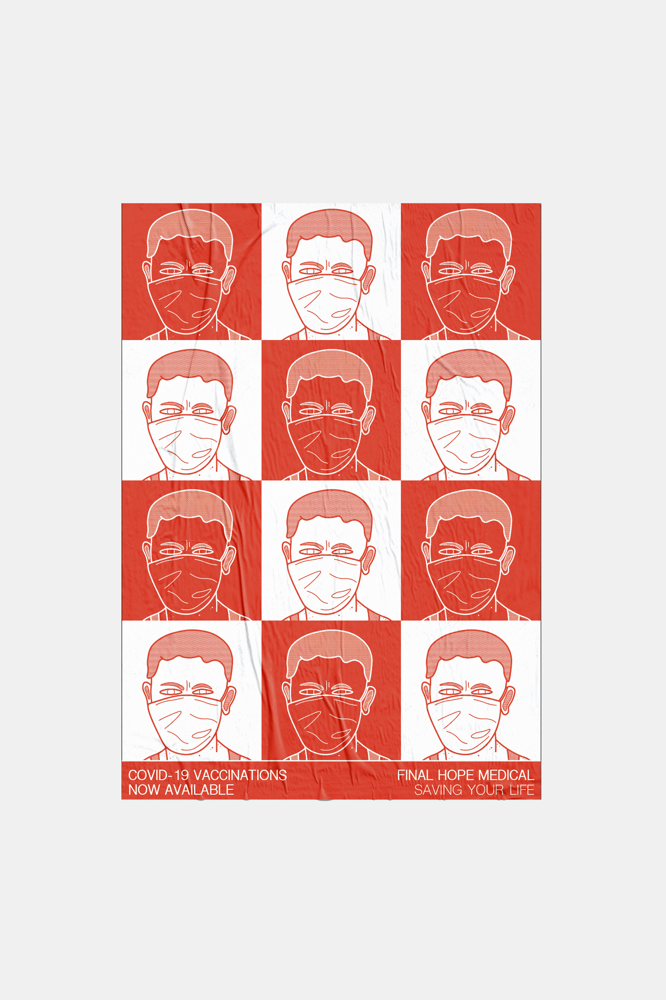
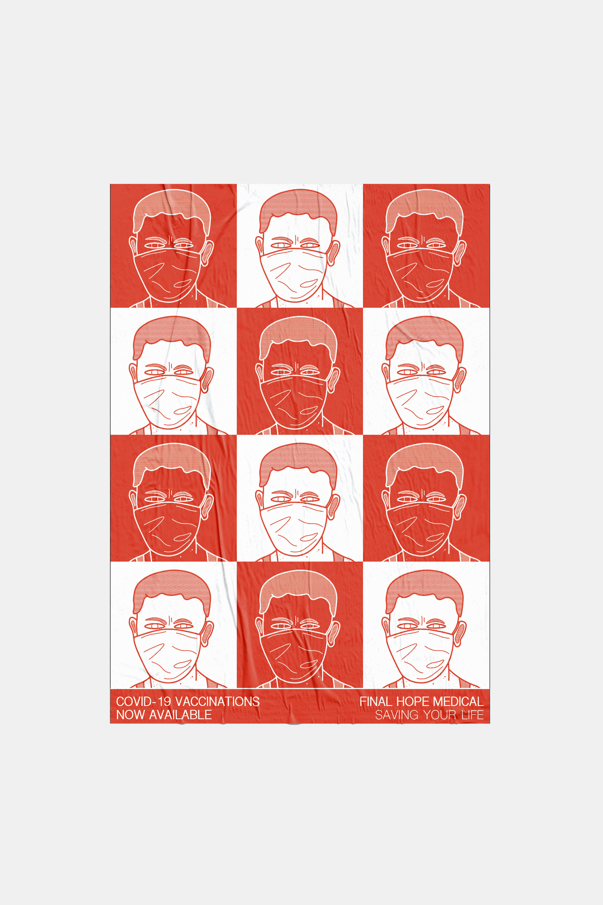
Inspired by Graphic Artist Patrick Thomas, the use of conceptual and abstract symbolism within his works such 'Automation' convey messages in a memorable and unique manner. Despite no direct correlation, the range and consistent graphic style is enduring and engaging.
Targeted at young adults, graphics and symbols are modern, bold and minimalist in appearance however compelling enough to break through the incredibly saturated nature of social media with intense colour and contrast.
User Interaction intends to drive the young adult to their nearest vaccination center whether that be via Instagram stories linked to a website or the mass printed business cards with QR codes used to redirect the user. Packaging remains consistent with the design style enacted across the campaign and is the final element between the user being first exposed to 'Final Hope Medical' and being immunised.
Outcomes: Poster, Publication, Brochure
Year: 2020
Tutor: Alex Margetic
RT Edgar is a brand that has been around for over 120 years and their marketing leverages heavily off their experience and traditional heritage. As such, this placed down quite strict guidelines in regards to font, colour and language.
 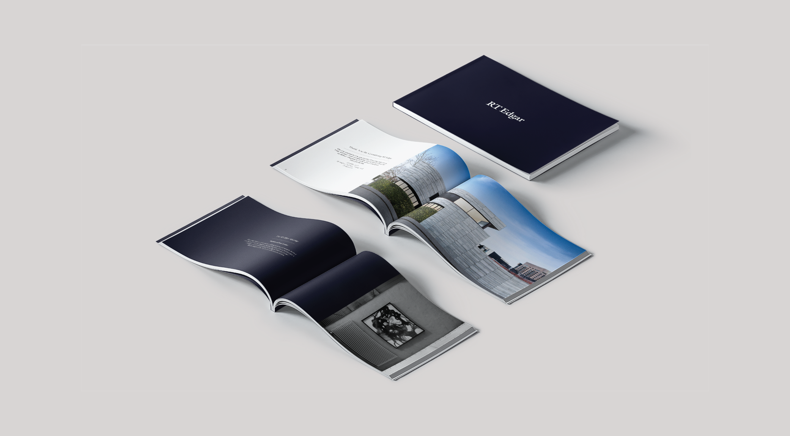
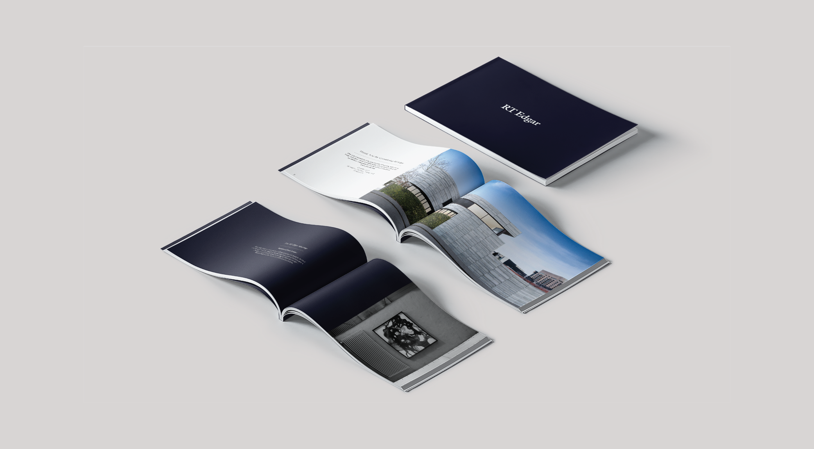
The audience is predominately older professionals usually wealthy with a number of properties in their portfolio. As such, the digital side of RT Edgar was not heavily relied upon as most of the client base was developed over time. The ultimate goal was to create a perception for potential vendors and clients that listing with RT Edgar is a notable, luxurious and prominent occasion. Hence, property needed to be presented in a sleek and grand way.
The development of multiple magazines including the Market Wrap and ‘Listing with RT Edgar’ booklet presented houses in a formal, luxe layout making the initial conversations with clients special. Other outcomes included a variety of Letterbox Drops and Collateral that seek to advertise properties and put RT Edgar at the forefront of the Realty industry.
In leading the ‘digital revolution’ of RT Edgar, magazines were then created in an online, interactive format including a variety of EDM templates that efficiently and conveniently engaged with the clientele.
The largest piece of work was a styleguide that outlined the full brand refresh including boards, printed material, stationary, brochures and newspaper advertisements.
Outcomes: Letterbox Drops, Magazines, Styleguide
Year: 2019
Tutor: Louise Siddalls
ASP recounts the life of Joe Dolce in an experimental theatre production, directed by Lara Thoms of APHIDS.
For the MADA 2020 Grad Show, students were tasked to interpret the play and create a visual campaign and identity for the event.
 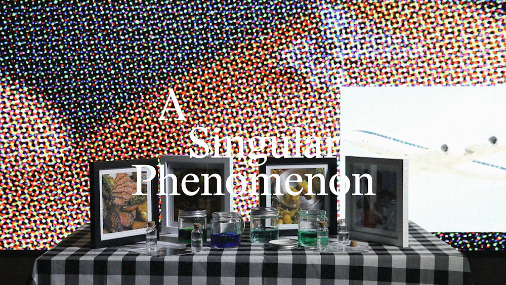
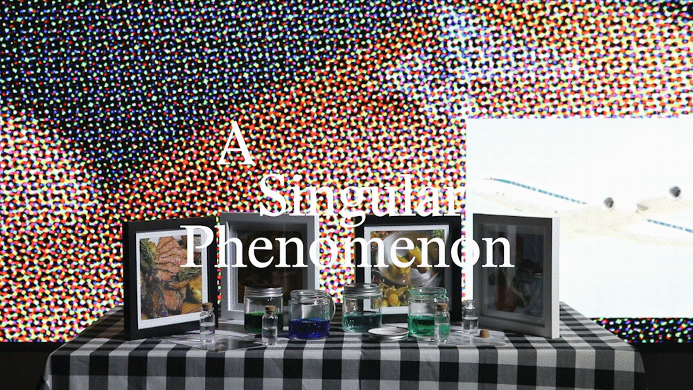
Utilising and manipulating found imagery creates a chaotic style for this project, similar to the work of Metahaven. The play uses loosely related events as a platform to build a story, allowing for a much more creative outcome.
Trying to engage with an audience within the creative industry is difficult due to the saturation of art direction. In addition, the production relied upon unassociated events throughout the life of Joe Dolce to build a story which only 'makes sense' at the end of the performance. Placing emphasis upon the process rather than the outcome, the final pieces are dervied from random image searches across a number of sharing sites to depict the random and confusing nature of the production.
The A0 Poster (Background Image: MADA) is the major piece of outcome which uses a selection of images that depict various parts of the play. Whilst seemingly random, each photo is somewhat connected to the life of Joe Dolce. The video is an interpretive piece to be used across social media which introuduces the major themes of the play conceptually. The final outcome is a website mockup which follows the same typographic style of the poster outcome offering the user a place to find out information regarding the exhibition and explore Joe Dolce's life.
Outcomes: Poster, Video, Website
Year: 2020
Tutor: Warren Taylor, Damiano Bertoli